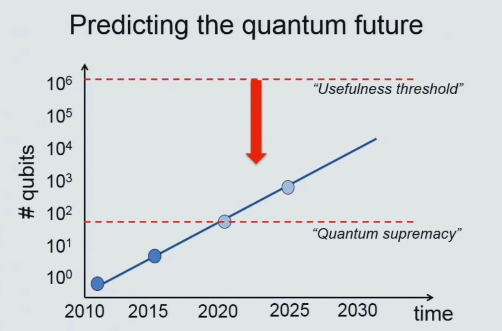
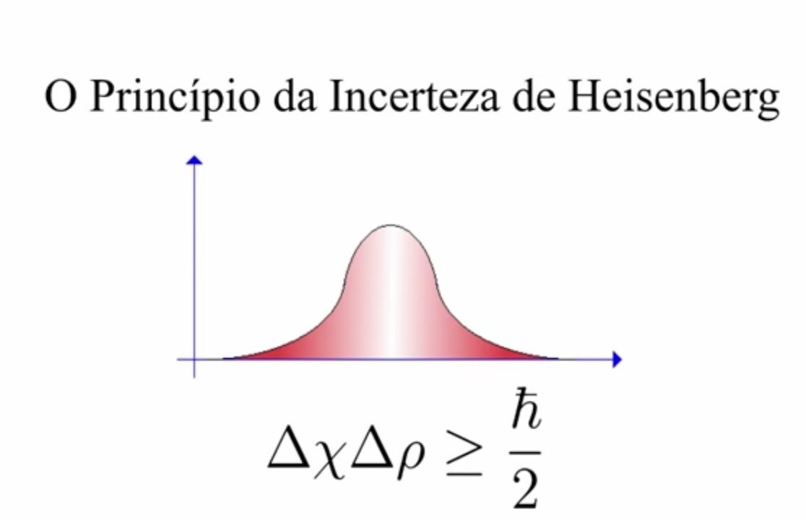

A computação quântica representa um campo interdisciplinar que abrange aspectos da ciência da computação, física e matemática. Esse domínio utiliza os princípios da mecânica quântica para abordar desafios complexos de maneira mais eficiente do que os computadores convencionais. A pesquisa e desenvolvimento em computação quântica abrangem tanto o hardware quanto a criação de aplicações específicas. Os computadores quânticos demonstram a capacidade de resolver certos tipos de problemas de forma mais rápida, aproveitando fenômenos quânticos como superposição e interferência. Setores como aprendizado de máquina (ML), otimização e simulação de sistemas físicos podem se beneficiar significativamente dessa velocidade aprimorada. Exemplos de aplicação incluem a otimização de portfólios financeiros e a simulação de sistemas químicos, desafios que atualmente supercomputadores de última geração não conseguem enfrentar. Bem-vindo à vanguarda da tecnologia e inovação. Embarque conosco numa jornada pela computação quântica, um reino onde as leis da física clássica cedem lugar a possibilidades extraordinárias. Este é o ponto de encontro para mentes curiosas e visionárias que buscam compreender e moldar o futuro da computação.
Propósito:
Nosso propósito é desmistificar a complexidade da computação quântica, proporcionando uma experiência educativa que transcende barreiras. Seja você um iniciante intrigado ou um especialista, nosso site oferece recursos criteriosamente elaborados para explorar e compreender os aspectos dessa revolução tecnológica. A aventura apenas começou! Não perca a oportunidade de aprofundar seus conhecimentos sobre a computação quântica.
Explore o universo da computação quântica e embarque nessa jornada transformadora!
Computação quântica é um campo de pesquisa que combina elementos da ciência da computação, física quântica e matemática avançada. Esse campo promissor tem o potencial de superar as limitações dos computadores tradicionais, usando os princípios da mecânica quântica para resolver problemas complexos de forma muito mais eficiente. A pesquisa em computação quântica abrange tanto a parte de hardware quanto o desenvolvimento de novas aplicações. O coração dessa revolução são os computadores quânticos, capazes de resolver certos tipos de problemas com uma velocidade impressionante, aproveitando conceitos como superposição e interferência quântica.
A eficácia dos computadores quânticos está na exploração desses fenômenos para realizar operações simultâneas, acelerando significativamente em comparação com os métodos tradicionais. Isso tem aplicações importantes em áreas como machine learning, otimização e simulação de sistemas físicos. Na área de machine learning, por exemplo, os algoritmos quânticos podem processar grandes volumes de dados simultaneamente, proporcionando uma vantagem significativa. Problemas complexos de otimização, como maximizar ou minimizar funções em domínios extensos, também podem ser abordados muito mais rapidamente com algoritmos quânticos.
Além disso, os computadores quânticos são notáveis na simulação de sistemas físicos complexos, como os encontrados em finanças e química. A otimização de portfólios financeiros, por exemplo, pode ser feita de maneira mais eficiente, considerando variáveis complexas simultaneamente. A simulação de sistemas químicos, que era anteriormente desafiadora para os supercomputadores mais poderosos, torna-se possível com a computação quântica, permitindo uma compreensão mais profunda e precisa de fenômenos moleculares e reações químicas. Em resumo, a computação quântica não apenas redefine o desempenho computacional, mas também abre novas oportunidades em diversas disciplinas científicas, inaugurando uma era de inovação e descoberta impulsionada pela exploração da mecânica quântica. Explore este campo fascinante para desbravar novos horizontes na ciência.
O que é um qubit?
Um qubit é a peça fundamental de informação na computação quântica. Ele desempenha um papel parecido com o dos bits na computação normal, mas com uma diferença crucial. Enquanto os bits normais são como interruptores que podem estar ligados (1) ou desligados (0), os qubits podem existir em várias posições ao mesmo tempo, conhecido como superposição. Isso os torna especiais e poderosos na resolução de problemas de maneiras diferentes dos bits tradicionais.
O que é quantum?
Em "computação quântica", quantum se refere à forma como o sistema utiliza a mecânica quântica para realizar cálculos. Na física, quantum é a menor unidade isolada possível de qualquer característica física. Normalmente, estamos falando das propriedades das partículas muito pequenas, como elétrons, neutrinos e fótons. Esses "quantums" são como os tijolos básicos que a computação quântica usa para construir seus cálculos.
Sobreposição:
Na fenomenologia da sobreposição, partículas quânticas existem como uma combinação de todos os estados possíveis simultaneamente, flutuando entre eles até que sejam observadas e medidas. Uma analogia útil é imaginar uma moeda: enquanto os bits clássicos são como lançar a moeda e obter cara ou coroa, a sobreposição permitiria visualizar todos os estados, incluindo intermediários, simultaneamente, como se pudéssemos ver cara e coroa ao mesmo tempo.
Emaranhamento:
O emaranhamento refere-se à capacidade das partículas quânticas de correlacionar seus resultados de medição, formando um sistema único em que influenciam uns aos outros. Ao emaranhar qubits, suas medidas tornam-se interdependentes, permitindo que as informações sejam inferidas de um qubit para outro. À medida que mais qubits são emaranhados em um sistema, os computadores quânticos podem realizar cálculos exponencialmente mais complexos e resolver problemas mais desafiadores.
Entrelaçamento:
O entrelaçamento quântico, um fenômeno fundamental da mecânica quântica, refere-se à conexão instantânea entre os estados de dois qubits, independentemente da distância entre eles. Esse efeito implica que alterações no estado de um qubit têm um impacto imediato no outro. Essa propriedade é explorada em algoritmos quânticos para resolver problemas complexos, aproveitando a capacidade de realizar operações simultâneas e paralelas em estados entrelaçados, conferindo uma vantagem potencial sobre abordagens clássicas.
Interferência quântica:
A interferência quântica é um comportamento intrínseco dos qubits, resultante da sobreposição, que afeta a probabilidade do colapso em diferentes estados. Para garantir resultados precisos, os computadores quânticos são projetados para minimizar a interferência. A abordagem da Microsoft, por exemplo, utiliza qubits topológicos que são estabilizados manipulando sua estrutura e envolvendo-os com compostos químicos para protegê-los contra influências externas, assegurando resultados mais confiáveis.
Evolução dos Qubits:
Empresas e laboratórios estão continuamente ampliando o número de qubits em sistemas quânticos para realizar cálculos mais complexos. Atualmente, sistemas com dezenas de qubits são comuns, mas a presença de ruído os torna ocasionalmente pouco confiáveis. A efetiva resolução de problemas do mundo real requer sistemas com dezenas ou centenas de milhares de qubits, e a transição para uma fase em que os computadores quânticos se tornarão verdadeiramente práticos é estimada para as próximas décadas.

Tabela Comparativa: Computação Clássica X Computação Quântica
Aspecto
Computação Clássica
Computação Quântica
Processamento de Dados
- Processamento sequencial. - Bits clássicos (0 ou 1).
- Processamento simultâneo. - Qubits quânticos (0, 1 ou ambos).
Velocidade de Processamento
- Limitada por operações sequenciais.
- Potencial para aceleração exponencial em certos casos.
Tipo de Informação
- Informação clássica (bits).
- Informação quântica (qubits).
Superposição
- Não aproveita superposição.
- Aproveita superposição para processamento paralelo.
Interferência Quântica
- Não se aplica.
- Aproveita interferência quântica para otimização.
Estabilidade
- Estados estáveis e previsíveis.
- Suscetível a decoerência e ruído quântico.
Algoritmos Clássicos
- Algoritmos tradicionais.
- Algoritmos quânticos inovadores para certos problemas.
Aplicações Práticas Atuais
- Amplamente estabelecidas em várias indústrias.
- Em fase inicial, com foco em problemas específicos.
Segurança na Criptografia
- Criptografia baseada em fatores de dificuldade.
- Oferece potencial para criptografia quântica mais segura.
Desenvolvimento Tecnológico
- Tecnologia consolidada e madura.
- Desafios significativos em hardware e estabilidade.
No site Universos Quânticos você encontra diversos conteúdos, artigos, livros, entrevistas e até glossário sobre a computação quântica.
Como ingressar na área de computação quântica:
Fundamentos de Computação Quântica:
Comece estudando os fundamentos da computação quântica, incluindo princípios quânticos e computação quântica. Livros como "Quantum Computation and Quantum Information" de Michael Nielsen e Isaac Chuang são excelentes recursos. Além disso, plataformas como Coursera, edX e Udacity oferecem cursos de introdução à computação quântica. O curso "Quantum Machine Learning" no Coursera, ministrado por Peter Wittek, é um exemplo. Nesses sites você encontra alguns guias para aprender computação quântica:
Aprenda a programar em linguagens quânticas como Qiskit (para IBM Quantum) ou Cirq (para Google's Quantum Computing). Ambas as plataformas têm documentação abrangente e tutoriais.
Experimente laboratórios quânticos online para ganhar experiência prática. IBM Quantum Experience e Google Quantum Playground são boas opções. Essas plataformas oferecem ambientes virtuais que permitem experimentar e compreender os princípios fundamentais da física quântica, contribuindo para o aprimoramento de habilidades práticas na área.
Participe de comunidades online para interagir com entusiastas e profissionais na área. O Quantum Computing Stack Exchange é um fórum valioso que oferece insights e discussões colaborativas, enriquecendo sua experiência de aprendizado em computação quântica. Juntar-se a essas plataformas aprimora seu conhecimento e possibilita interações significativas com especialistas na área.
Eventos e Conferências:
Google Scholar: O Google Scholar é uma excelente ferramenta para procurar artigos acadêmicos e conferências na área de computação quântica. Você pode encontrar informações sobre eventos futuros e passados.
IEEE Xplore: A biblioteca digital do IEEE (Institute of Electrical and Electronics Engineers) contém uma variedade de recursos, incluindo conferências e eventos na área de computação quântica.
ACM Digital Library: A ACM (Association for Computing Machinery) Digital Library é outra fonte valiosa para encontrar informações sobre conferências, workshops e eventos relacionados à computação quântica.
Eventos Online Plataformas:
Plataformas dedicadas a eventos online, como Eventbrite, Meetup e Eventful, muitas vezes listam conferências e encontros na área de computação quântica. Elas facilitam a divulgação e participação em eventos dedicados a essa tecnologia inovadora, proporcionando uma experiência acessível e conveniente para a comunidade interessada.
Sites de Organizações Quânticas:
Verifique os sites de organizações dedicadas à computação quântica, como o Quantum Industry Consortium, para obter informações sobre eventos e conferências. Essas plataformas fornecem uma visão abrangente das oportunidades de networking e aprendizado, conectando os interessados com os eventos mais relevantes e as últimas tendências em computação quântica.
Redes Sociais Acadêmicas e Profisionais:
Plataformas como ResearchGate e Academia.edu podem ser usadas para seguir pesquisadores e ficar atualizado sobre eventos que estão participando e organizando.Essas redes acadêmicas oferecem uma maneira eficaz de estar atualizado com as últimas pesquisas e oportunidades de networking nesse campo em constante evolução. Participe de grupos relacionados à computação quântica no LinkedIn, onde as informações sobre eventos acadêmicos são frequentemente compartilhadas. Essa plataforma profissional oferece uma oportunidade valiosa para se conectar com profissionais e pesquisadores na área, ficando por dentro das últimas novidades e oportunidades de eventos relevantes para a computação quântica.
Revistas Científicas e Revistas Especializadas:
Revistas como a "Quantum Science and Technology" e "Physical Review X" muitas vezes destacam eventos e conferências na área de computação quântica. Acompanhar essas publicações é uma maneira eficaz de ficar informado sobre os últimos desenvolvimentos, descobertas e oportunidades de participação.
Blogs e Artigos Científicos:
O arXiv é um repositório de artigos científicos onde você pode encontrar trabalhos recentes em computação quântica. Ao explorar esse recurso, é possível manter-se atualizado sobre as últimas pesquisas e descobertas nesse campo dinâmico, proporcionando uma fonte valiosa de informações para profissionais e entusiastas da área.
Cursos Universitários Online:
MIT (Massachusetts Institute of Technology): O MIT é conhecido por sua excelência em ciência da computação e engenharia, e oferece cursos e pesquisas na área de computação quântica.
Universidade de Waterloo: A Universidade de Waterloo, no Canadá, é reconhecida por seu Instituto Perimeter de Física Teórica, que se concentra em pesquisa em física quântica e computação quântica.
Universidade de Oxford: A Universidade de Oxford, no Reino Unido, oferece cursos e programas de pesquisa na área de ciência da computação quântica.
Universidade de Stanford: Stanford, nos Estados Unidos, é uma instituição líder em pesquisa em ciência da computação e oferece cursos relacionados à computação quântica.
Depoimentos:
“Eu diria que hoje a computação quântica não tem uma utilidade prática, mas as empresas estão num ponto de investir para um futuro em que ela tenha.”
Bruna Shinohara de Mendonça, pesquisadora e cientista da USP - Linkedin
"O mercado financeiro vê na computação quântica um potencial estratégico para ampliar seus negócios. Quando a gente vai fazer análise de risco, precificação de derivativo, se eu fazer uma simulação perfeita, ela nunca vai terminar de rodar".
Cíntia Scovine Barcelos, diretora de tecnologia do Bradesco - Linkedin
Aplicações Práticas da Computação Quântica
Setores e Indústrias que Podem se Beneficiar:
Finanças: Aprimoramento na gestão de portfólios, avaliação de riscos e simulações mais rápidas e precisas.
Saúde: Avanços na descoberta de medicamentos, simulação molecular para desenvolvimento de novos tratamentos.
Logística e Cadeia de Suprimentos: Melhorias na otimização de rotas, alocação eficiente de recursos e resolução de desafios logísticos.
Segurança e Criptografia: Desenvolvimento de métodos de criptografia mais robustos e seguros para proteger dados sensíveis.
Inteligência Artificial (IA):Aceleração do treinamento e análise de grandes conjuntos de dados para avanços na IA.
Simulação de Moléculas:
A simulação de moléculas na computação quântica representa uma aplicação altamente significativa com o potencial de transformar fundamentalmente a compreensão e o design de materiais, medicamentos e reações químicas. Para aqueles envolvidos nesse campo, é comum estar ciente dos métodos tradicionais de simulação molecular, como a Dinâmica Molecular Clássica (DMC), que utiliza equações de movimento clássicas para prever o comportamento de átomos e moléculas. No entanto, a computação quântica oferece uma abordagem distintamente diferente, empregando os princípios intrínsecos da mecânica quântica para realizar simulações moleculares com uma precisão sem precedentes.
Enquanto a DMC é baseada em modelos clássicos que podem simplificar algumas interações, a computação quântica considera fenômenos quânticos, permitindo uma representação mais fiel e detalhada dos sistemas moleculares. A capacidade da computação quântica de manipular estados quânticos simultaneamente proporciona uma vantagem notável na simulação de sistemas moleculares complexos. Isso possibilita a análise de interações fundamentais entre átomos e moléculas, proporcionando insights mais profundos e precisos. Essa abordagem inovadora tem o potencial de acelerar significativamente o desenvolvimento de novos materiais, medicamentos e compreensão das reações químicas, marcando uma nova era na simulação molecular e no design de substâncias químicas.
Algoritmos de Otimização:
Em computação quântica, os algoritmos de otimização são projetados para serem executados em computadores quânticos, aproveitando os princípios da mecânica quântica para potencializar a resolução de problemas de otimização específicos.
Busca Quântica (Quantum Search Algorithm): Também conhecido como o algoritmo de Grover, é um dos algoritmos mais famosos na computação quântica. Ele fornece uma vantagem quadrática na busca não estruturada em comparação com algoritmos clássicos.
Algoritmo de Otimização Quântica (Quantum Approximate Optimization Algorithm - QAOA): Desenvolvido para resolver problemas de otimização combinatória. O QAOA é um algoritmo de aproximação que utiliza circuitos quânticos para encontrar soluções para problemas de otimização, como o Problema do Caixeiro Viajante e o Problema da Mochila.
Algoritmo de Variacional Quântico (Variational Quantum Eigensolver - VQE): Projetado para encontrar aproximações para os menores autovalores e autoestados de uma matriz hamiltoniana. O VQE é usado em química quântica para simular a estrutura molecular e calcular propriedades de sistemas químicos.
Amplitude Amplification Algorithms: Algoritmos que amplificam as amplitudes das soluções desejadas, como o algoritmo de Grover. Embora seu foco inicial seja na busca, esses algoritmos também podem ser adaptados para problemas de otimização.
Criptografia Quântica:
A criptografia quântica, fundamentada nos princípios da mecânica quântica, redefine a segurança nas comunicações ao explorar propriedades distintivas das partículas quânticas. Essa abordagem inovadora se apoia em fenômenos como a superposição e o emaranhamento quântico para estabelecer protocolos robustos de comunicação segura. Ao empregar sistemas quânticos, a criptografia quântica supera as limitações das técnicas tradicionais. A superposição permite que os qubits, unidades fundamentais de informação quântica, existam simultaneamente em múltiplos estados.
Essa característica confere uma camada única de segurança, pois a observação de um qubit compromete sua superposição, alertando imediatamente sobre qualquer tentativa de interferência. O emaranhamento quântico, por sua vez, estabelece uma conexão instantânea entre partículas, independentemente da distância. Qualquer intervenção ou medição realizada em uma partícula emaranhada afeta instantaneamente sua contraparte, tornando detectável qualquer tentativa de interceptação.
Principais protocolos de criptografia quântica:
Distribuição Quântica de Chave (Quantum Key Distribution - QKD): Um dos principais usos da criptografia quântica é garantir uma chave de criptografia segura entre duas partes, sem a possibilidade de interceptação.
Teletransporte Quântico: Um processo que permite a transferência exata de informações quânticas entre dois pontos, sem que os qubits viajem pelo espaço intermediário.
Distribuição Segura de Chaves Quânticas (QKD): O protocolo BBM92 (BB84) é um exemplo clássico de QKD. Ele envolve o envio de fótons polarizados de maneira aleatória e a detecção desses fótons pela parte receptora, usando bases de medida escolhidas aleatoriamente. Qualquer tentativa de interceptação perturbaria os estados quânticos, revelando a presença do intruso.
Princípio da Incerteza:
O princípio da incerteza de Heisenberg desempenha um papel crucial na criptografia quântica, estabelecendo que a medição precisa de duas variáveis conjugadas, como posição e momento linear, é intrinsecamente incerta. Em termos simples, isso implica que a obtenção precisa de informações sobre uma propriedade quântica inevitavelmente influencia a precisão na determinação de outra.
Esse fenômeno tem implicações profundas na segurança da criptografia quântica. Quando aplicado à transmissão de informações, significa que qualquer tentativa de observação ou medição de uma partícula quântica para obter informações sobre seu estado influencia diretamente esse estado. Essa influência é detectada pelo remetente ou destinatário da informação, servindo como um alerta intrínseco contra tentativas de acesso não autorizado ou violação da segurança.

Exemplo Real:
O algoritmo de Enxame de Partículas (Particle Swarm Optimization - PSO) é uma técnica de otimização inspirada no comportamento de enxames na natureza, como o voo de pássaros ou a movimentação de cardumes de peixes. Este algoritmo foi desenvolvido para resolver problemas de otimização, onde o objetivo é encontrar a melhor solução possível em um espaço de busca complexo. O PSO opera com um conjunto de partículas que se movem pelo espaço de soluções em busca da solução ótima. Cada partícula representa uma possível solução para o problema e possui uma posição no espaço de busca. Além disso, cada partícula mantém sua própria velocidade, que é ajustada iterativamente com base no desempenho das soluções ao longo do tempo.
A movimentação das partículas é influenciada pela experiência pessoal de cada partícula e pela experiência coletiva do enxame. Cada partícula mantém uma memória da melhor solução que ela já encontrou (pbest), e o enxame mantém uma memória da melhor solução global encontrada (gbest). A posição e a velocidade de cada partícula são ajustadas em direção às melhores soluções, tanto pessoal quanto global. Durante cada iteração do algoritmo, as partículas se movem em direção às melhores soluções, explorando o espaço de busca de maneira cooperativa. Esse processo de ajuste contínuo das posições das partículas baseado em suas experiências individuais e na experiência coletiva do enxame permite que o PSO encontre soluções eficientes em espaços de busca complexos e multidimensionais.
O PSO tem sido aplicado em uma variedade de problemas de otimização, como otimização de funções matemáticas, treinamento de redes neurais, design de antenas, entre outros. Sua capacidade de explorar o espaço de busca de maneira eficiente e encontrar soluções de alta qualidade faz dele uma ferramenta valiosa em muitas áreas da computação e engenharia. O entendimento do comportamento de enxames na natureza e a aplicação desse conceito no desenvolvimento do PSO oferecem uma abordagem inovadora para a resolução de problemas complexos de otimização.
Desafios atuais da computação quântica
Correção de Erros:
A correção de erros é um componente crítico na implementação bem-sucedida de sistemas quânticos, especialmente em computadores quânticos. A natureza delicada dos qubits e a suscetibilidade a erros quânticos exigem estratégias sofisticadas para garantir a precisão e a estabilidade dos cálculos. Aqui estão alguns conceitos e abordagens relacionados à correção de erros quânticos: Erro quântico refere-se a desvios indesejados entre o estado quântico real de um sistema e o estado desejado. Esses erros podem surgir devido à decoerência, flutuações de parâmetros do sistema, entre outros fatores.
Qubits Lógicos e Físicos:
Qubits lógicos são os qubits usados para armazenar informação quântica após a aplicação dos códigos de correção de erros. Qubits físicos referem-se aos qubits na implementação física do hardware. A correção de erros visa corrigir os erros nos qubits físicos para proteger os qubits lógicos.
Correção de Erros Ativa e Passiva:
A correção de erros ativa envolve intervenção ativa para corrigir erros à medida que ocorrem. A correção de erros passiva, por outro lado, detecta erros e aplica correções após a conclusão de uma série de operações.
Algoritmos de Detecção e Correção:
Algoritmos específicos são usados para detectar e corrigir erros quânticos. Isso pode envolver a comparação de múltiplas cópias de um estado quântico ou a manipulação de estados entrelaçados para determinar a ocorrência de erros.
Desafios de Hardware:
A computação quântica enfrenta desafios críticos de hardware. A decoerência, a sensibilidade dos qubits a perturbações externas, ameaça a estabilidade, resultando na perda de informações. Erros quânticos, provenientes de flutuações de temperatura e imperfeições nos qubits, demandam técnicas eficazes de correção. A escalabilidade é um obstáculo significativo na construção de processadores quânticos mais poderosos, com a complexidade dos sistemas crescendo exponencialmente com o aumento de qubits. O controle preciso da temperatura é vital, dado que variações afetam negativamente os cálculos quânticos sensíveis. Integrar computação quântica com sistemas clássicos é um desafio ativo, destacado na pesquisa de dispositivos híbridos. A resolução desses desafios é fundamental para desbloquear o potencial total da computação quântica e transformar a maneira como enfrentamos problemas computacionais complexos.
Oportunidades:
Pesquisa Científica: A pesquisa em computação quântica está em andamento em todo o mundo. Oportunidades estão disponíveis para cientistas e pesquisadores que desejam contribuir para o desenvolvimento de algoritmos quânticos, hardware quântico e teoria quântica da informação.
Desenvolvimento de Hardware: Empresas e laboratórios estão investindo no desenvolvimento de hardware quântico, como qubits supercondutores, qubits baseados em íons, e outras tecnologias emergentes. Engenheiros de hardware com conhecimento em física quântica e design de circuitos podem encontrar oportunidades emocionantes nesta área.
Desenvolvimento de Software Quântico: Como a computação quântica requer algoritmos e linguagens de programação específicos, há uma demanda crescente por desenvolvedores de software quântico. Estes profissionais podem trabalhar em otimização de algoritmos clássicos para processadores quânticos, bem como no desenvolvimento de novos algoritmos quânticos.
Segurança da Informação Quântica: Com a ameaça potencial de que algoritmos quânticos possam quebrar algoritmos de criptografia convencionais, existe uma necessidade crescente de especialistas em segurança quântica. Isso envolve o desenvolvimento de protocolos de segurança quântica e a transição para sistemas de criptografia quântica.
Educação e Treinamento: À medida que a computação quântica se torna mais difundida, a demanda por profissionais qualificados aumenta. Oportunidades surgem no campo da educação, treinamento e consultoria, onde especialistas em computação quântica podem compartilhar seu conhecimento com empresas, instituições acadêmicas e governos.
Startups e Empreendedorismo: A computação quântica está abrindo espaço para startups inovadoras em diversas áreas, desde o desenvolvimento de software especializado até a construção de hardware quântico. Empreendedores podem explorar oportunidades para criar soluções disruptivas e pioneiras.
Colaboração Interdisciplinar: A computação quântica requer uma abordagem interdisciplinar, envolvendo físicos, engenheiros, matemáticos e cientistas da computação. Oportunidades existem para profissionais que podem colaborar efetivamente em equipes multidisciplinares.
Aplicações Industriais: À medida que a tecnologia quântica se torna mais madura, várias indústrias, como farmacêutica, logística, finanças e inteligência artificial, podem se beneficiar de aplicações quânticas específicas. Profissionais que entendem as necessidades dessas indústrias e podem aplicar soluções quânticas terão oportunidades significativas.
Matemática da computação quântica
A computação quântica envolve conceitos matemáticos avançados, mas podemos explorar alguns fundamentos essenciais com explicações claras e exemplos práticos. Aqui estão alguns conceitos matemáticos fundamentais na computação quântica:
Qubits:
Qubits são a unidade básica de informação quântica. Enquanto bits clássicos podem estar em estado 0 ou 1, qubits podem existir em uma superposição desses estados.
Exemplo Prático:
Superposição:
Qubits podem existir em múltiplos estados simultaneamente, conhecido como superposição. Isso permite que um computador quântico processe várias informações de uma só vez.
Exemplo Prático:
Medição Quântica
A medição de um qubit colapsa seu estado quântico para um estado específico com base nas probabilidades associadas.
Exemplo Prático:
Portas Quânticas
Assim como portas lógicas em computação clássica, portas quânticas realizam operações em qubits, manipulando suas amplitudes de probabilidade.
Exemplo Prático:
Amplitude e Probabilidade
A amplitude quântica (α e β) é associada à probabilidade de encontrar um qubit em um estado específico após a medição.
Exemplo Prático
Teoria de Densidade
Considere um sistema quântico em um estado misto, representado pela matriz de densidade. Isso é útil quando o sistema não está em um estado puro e requer uma descrição mais geral.